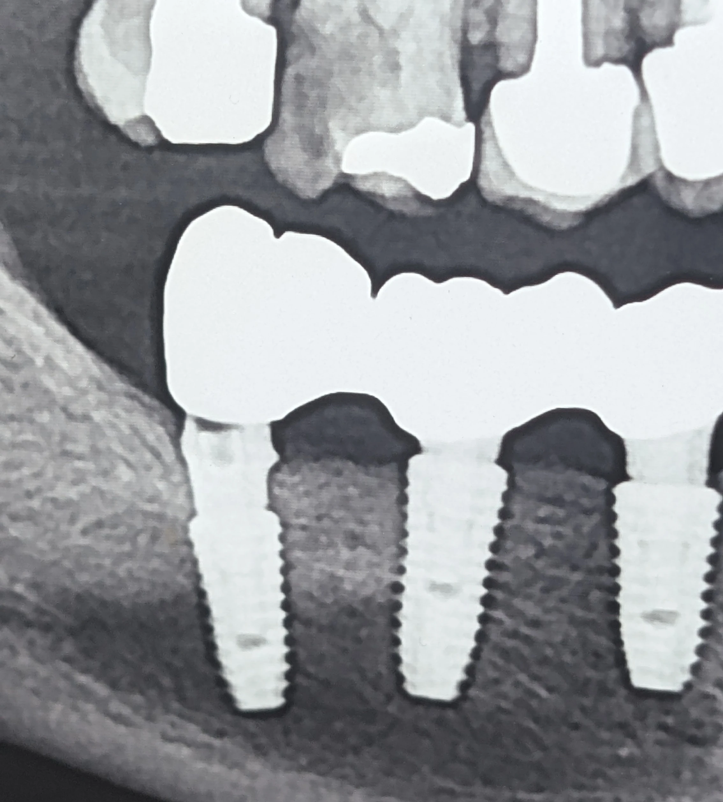

در پروتزهای ایمپلنتی دیجیتال، انتقال دقیق اطلاعات Scan Body و انتخاب صحیح فایل کتابخانهای از ارکان درمان صحیح و موفق است؛ چه در رستوریشنهای تکواحدی و چه چندواحدی.
در یک مراجعه، بیمار با شکست در ناحیه جوینت بین واحدهای ۶ و ۷ مراجعه کرد. بررسی تصاویر پیش از شکست نشان داد که روکش واحد ۷ بهطور کامل روی اباتمنت ننشسته بوده است.
با توجه به اطلاعاتی که از بیمار دریافت شد، مشخص گردید که پیشتر برای وی اسکن دیجیتال انجام شده و روکشها بهصورت دیجیتال طراحی و ساخته شدهاند.
وقتی تطابق نهایی دچار مشکل میشود، دو خطای پایهای باید جدی بررسی شوند:
انتقال نادرست هندسه Scan Body به نرمافزار طراحی
انتخاب فایل کتابخانهای نادرست در لابراتوار
پیامد این خطاها میتواند این باشد که سیستم طراحی، عملاً با یک مرجع اشتباه کار کند؛ برای مثال، تطابق با Scan Body کوتاه بهجای نوع بلند و در نتیجه ساخت اباتمنتی با ارتفاع یا هندسه نامتناسب.
در رستوریشنهای اسپلینت، گاهی عدم نشستن کامل یک واحد میتواند در مرحله سمان کردن کمتر واضح باشد؛ چون سازه به شکل یکپارچه نیرو و تماسها را توزیع میکند و خطای یک واحد ممکن است در نگاه اول «ماسکه» شود.
اگر روکش عملاً ساپورت مؤثر از سمت اباتمنت نداشته باشد، تمرکز تنش در ناحیه کانکتور افزایش پیدا میکند و شکست از ناحیه جوینت میتواند رخ دهد.
در این وضعیت، مسیر اصلاح به جای حدسهای پراکنده، باید به نقطه مرجع برگردد:
اسکن مجدد با Scan Body صحیح
کنترل تطابق با فایل کتابخانهای درست
و بازسازی پروتز بر اساس دیتای اصلاحشده
Scan Body فقط «یک ابزار اسکن» نیست؛ مرجع هندسی طراحی است.
هر خطا در انتقال داده یا انتخاب فایل مرجع، میتواند مسیر درمان را از یک فیت قابلاعتماد به یک سازه با تنش پنهان و شکست دیرهنگام تبدیل کند.